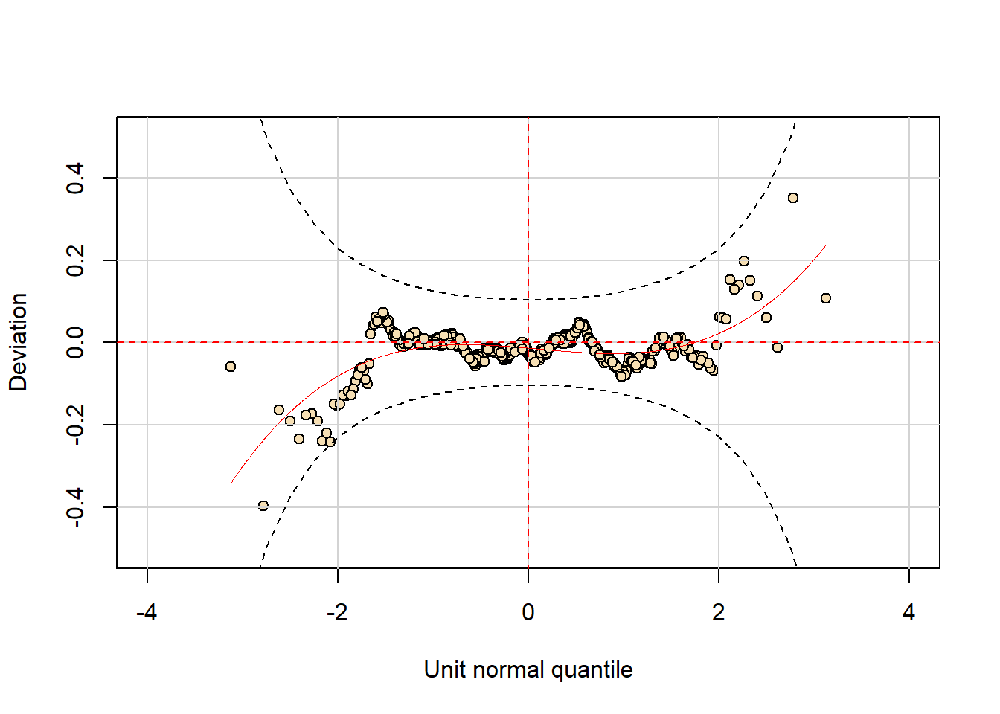

Vamos usar a base de dados worldcup do pacote faraway. O objetivo aqui é modelar o número de chutes a gol em função da posição do jogador e do tempo que ele ficou em campo. Os dados são referentes aos jogos da copa do mundo de 2010.
Excluindo os goleiros da base.
par(cex = 1.25, las = 1, mar = c(4,4,2,2))
barplot(table(factor(dados$Shots)), xlab = 'Número de chutes',
ylab = 'Frequência')Apenas para excluir o nível ‘Goalkeeper’ do fator ‘Position’.
Alguns gráficos, para iniciar a análise.
Os gráficos indicam que atacantes chutam mais que meio-campistas, que por sua vez chutam mais que os jogadores de defesa.
A frequência de chutes aumenta conforme o tempo em campo. Percebe-se aumento tanto na média (locação) quanto na variância (escala).
Vamos começar pelo ajuste de um modelo log-linear, com resposta Poisson.
## GAMLSS-RS iteration 1: Global Deviance = 2107.696
## GAMLSS-RS iteration 2: Global Deviance = 2107.696## ******************************************************************
## Summary of the Randomised Quantile Residuals
## mean = -0.06322369
## variance = 1.613523
## coef. of skewness = 0.5608787
## coef. of kurtosis = 3.700733
## Filliben correlation coefficient = 0.9903017
## ******************************************************************Evidentemente o modelo não ajusta bem os dados.
Vamos agora substituir a Poisson pela distribuição binomial negativa. Testaremos diferentes especificações para o modelo.
Modelo sem covariáveis para o parâmetro de escala.
## GAMLSS-RS iteration 1: Global Deviance = 1993.282
## GAMLSS-RS iteration 2: Global Deviance = 1992.048
## GAMLSS-RS iteration 3: Global Deviance = 1992.048Modelo com a posição na modelagem do parâmetro de escala.
## GAMLSS-RS iteration 1: Global Deviance = 1964.539
## GAMLSS-RS iteration 2: Global Deviance = 1961.897
## GAMLSS-RS iteration 3: Global Deviance = 1961.893
## GAMLSS-RS iteration 4: Global Deviance = 1961.893Modelo com a posição e o tempo na modelagem do parâmetro de escala.
ajusteNB3 <- gamlss(Shots ~ Position + Time, sigma.fo =~ Position + Time,
data = dados, family = NBI)## GAMLSS-RS iteration 1: Global Deviance = 1964.36
## GAMLSS-RS iteration 2: Global Deviance = 1961.534
## GAMLSS-RS iteration 3: Global Deviance = 1961.514
## GAMLSS-RS iteration 4: Global Deviance = 1961.513## df AIC
## ajusteNB2 7 1975.893
## ajusteNB3 8 1977.513
## ajusteNB1 5 2002.048
## ajustePO 4 2115.696O ajuste do modelo2 proporciona menor valor de AIC.
## Likelihood Ratio Test for nested GAMLSS models.
## (No check whether the models are nested is performed).
##
## Null model: deviance= 1961.893 with 7 deg. of freedom
## Altenative model: deviance= 1961.513 with 8 deg. of freedom
##
## LRT = 0.3793656 with 1 deg. of freedom and p-value= 0.537943O teste da razão de verossimilhanças não indica diferença significativa dos ajustes dos dois modelos. Logo, devemos optar pelo modelo mais simples, sem a covariável “Time” no parâmetro de escala.
## ******************************************************************
## Summary of the Randomised Quantile Residuals
## mean = -0.01719265
## variance = 1.02911
## coef. of skewness = -0.02508728
## coef. of kurtosis = 3.220703
## Filliben correlation coefficient = 0.9989265
## ******************************************************************
O modelo produz ajuste satisfatório.
Como o ajuste de um GAMLSS pode envolver até quatro parâmetros, (mu, sigma, nu e tau) as predições podem ser aplicadas a qualquer um deles.
## ******************************************************************
## Family: c("NBI", "Negative Binomial type I")
##
## Call: gamlss(formula = Shots ~ Position + Time, sigma.formula = ~Position,
## family = NBI, data = dados)
##
## Fitting method: RS()
##
## ------------------------------------------------------------------
## Mu link function: log
## Mu Coefficients:
## Estimate Std. Error t value Pr(>|t|)
## (Intercept) -1.2990325 0.1188140 -10.933 < 2e-16 ***
## PositionForward 1.5638282 0.1058679 14.772 < 2e-16 ***
## PositionMidfielder 0.9642620 0.1178274 8.184 1.91e-15 ***
## Time 0.0051999 0.0002569 20.243 < 2e-16 ***
## ---
## Signif. codes: 0 '***' 0.001 '**' 0.01 '*' 0.05 '.' 0.1 ' ' 1
##
## ------------------------------------------------------------------
## Sigma link function: log
## Sigma Coefficients:
## Estimate Std. Error t value Pr(>|t|)
## (Intercept) -0.4389 0.2526 -1.737 0.082890 .
## PositionForward -2.5369 0.6680 -3.798 0.000162 ***
## PositionMidfielder -0.2130 0.3147 -0.677 0.498846
## ---
## Signif. codes: 0 '***' 0.001 '**' 0.01 '*' 0.05 '.' 0.1 ' ' 1
##
## ------------------------------------------------------------------
## No. of observations in the fit: 559
## Degrees of Freedom for the fit: 7
## Residual Deg. of Freedom: 552
## at cycle: 4
##
## Global Deviance: 1961.893
## AIC: 1975.893
## SBC: 2006.176
## ******************************************************************Vamos criar uma nova base para predição. Considere jogadores com as seguintes covariáveis.
## [1] -0.7790393 -0.2590461 0.7809404 0.7847890 1.3047822 2.3447686 0.1852227
## [8] 0.7052159 1.7452024pmu <- predict(ajusteNB2, newdata = ndados, what = 'mu', type = 'response')
pmu <- round(pmu, 3)
data.frame(ndados, pmu)## Position Time pmu
## 1 Defender 100 0.459
## 2 Defender 200 0.772
## 3 Defender 400 2.184
## 4 Forward 100 2.192
## 5 Forward 200 3.687
## 6 Forward 400 10.431
## 7 Midfielder 100 1.203
## 8 Midfielder 200 2.024
## 9 Midfielder 400 5.727## [1] -0.4389321 -0.4389321 -0.4389321 -2.9758064 -2.9758064 -2.9758064 -0.6519116
## [8] -0.6519116 -0.6519116## [1] 0.645 0.645 0.645 0.051 0.051 0.051 0.521 0.521 0.521Vamos estimar a probabilidade de se ter ao menos um chute a gol para cada um dos nove casos (combinações de posição e tempo).
Valores acima de zero.
## [1] 0.331 0.466 0.744 0.875 0.966 1.000 0.607 0.749 0.930Agora, vamos calcular a probabilidade de cinco chutes ou mais, em cada caso.
## [1] 0.002 0.010 0.140 0.082 0.315 0.950 0.032 0.114 0.509Concatenando os resultados.
## Position Time pmu ps p1m p5m
## 1 Defender 100 0.459 0.645 0.331 0.002
## 2 Defender 200 0.772 0.645 0.466 0.010
## 3 Defender 400 2.184 0.645 0.744 0.140
## 4 Forward 100 2.192 0.051 0.875 0.082
## 5 Forward 200 3.687 0.051 0.966 0.315
## 6 Forward 400 10.431 0.051 1.000 0.950
## 7 Midfielder 100 1.203 0.521 0.607 0.032
## 8 Midfielder 200 2.024 0.521 0.749 0.114
## 9 Midfielder 400 5.727 0.521 0.930 0.509Vamos plotar a função de probabilidade estimada para os nove casos.
par(las = 1, mar = c(5,4,3,2), mfrow = c(3,3))
for(i in 1:9)
plot(0:25, dNBI(0:25, mu = pmu[i], sigma = ps[i]), type = 'h', xlab = 'Shots',
ylab = 'Probabilidade', lwd = 1.5, cex.lab = 1.4, cex.axis = 1.4,
main = paste('Caso',i))Agora vamos extrair também os erros padrões correspondentes às predições. O pacote gamlss ainda não permite obter erros padrões para observações que não estão na base. Vamos resolver isso aumentando a base com os dados de predição. No ajuste do modelo daremos peso zero a tais observações.
Selecionando apenas as variáveis usadas na análise.
Novos dados acrescentados de um vetor de uns para a resposta (poderia ser qualquer outro valor, não será usado para ajuste ou predição).
names(dados_predic)[1] <- 'Shots'
dados_aument <- data.frame(rbind(dados_ajuste,dados_predic))
tail(dados_aument, 15)## Shots Position Time
## van Bommel 2 Midfielder 540
## van Bronckhorst 1 Defender 540
## van Persie 14 Forward 479
## von Bergen 0 Defender 234
## Alvaro Pereira 6 Midfielder 409
## Ozil 7 Midfielder 497
## 1 1 Defender 100
## 2 1 Defender 200
## 3 1 Defender 400
## 4 1 Forward 100
## 5 1 Forward 200
## 6 1 Forward 400
## 7 1 Midfielder 100
## 8 1 Midfielder 200
## 9 1 Midfielder 400Concatenando os dados de ajuste e de predição por linhas. Nas linhas 1 a 559 estão os dados de ajuste; nas linhas 560 a 568 os de predição.
## [1] 1 1 1 1 1 1 1 1 1 1 1 1 1 1 1 1 1 1 1 1 1 1 1 1 1 1 1 1 1 1 1 1 1 1 1 1 1
## [38] 1 1 1 1 1 1 1 1 1 1 1 1 1 1 1 1 1 1 1 1 1 1 1 1 1 1 1 1 1 1 1 1 1 1 1 1 1
## [75] 1 1 1 1 1 1 1 1 1 1 1 1 1 1 1 1 1 1 1 1 1 1 1 1 1 1 1 1 1 1 1 1 1 1 1 1 1
## [112] 1 1 1 1 1 1 1 1 1 1 1 1 1 1 1 1 1 1 1 1 1 1 1 1 1 1 1 1 1 1 1 1 1 1 1 1 1
## [149] 1 1 1 1 1 1 1 1 1 1 1 1 1 1 1 1 1 1 1 1 1 1 1 1 1 1 1 1 1 1 1 1 1 1 1 1 1
## [186] 1 1 1 1 1 1 1 1 1 1 1 1 1 1 1 1 1 1 1 1 1 1 1 1 1 1 1 1 1 1 1 1 1 1 1 1 1
## [223] 1 1 1 1 1 1 1 1 1 1 1 1 1 1 1 1 1 1 1 1 1 1 1 1 1 1 1 1 1 1 1 1 1 1 1 1 1
## [260] 1 1 1 1 1 1 1 1 1 1 1 1 1 1 1 1 1 1 1 1 1 1 1 1 1 1 1 1 1 1 1 1 1 1 1 1 1
## [297] 1 1 1 1 1 1 1 1 1 1 1 1 1 1 1 1 1 1 1 1 1 1 1 1 1 1 1 1 1 1 1 1 1 1 1 1 1
## [334] 1 1 1 1 1 1 1 1 1 1 1 1 1 1 1 1 1 1 1 1 1 1 1 1 1 1 1 1 1 1 1 1 1 1 1 1 1
## [371] 1 1 1 1 1 1 1 1 1 1 1 1 1 1 1 1 1 1 1 1 1 1 1 1 1 1 1 1 1 1 1 1 1 1 1 1 1
## [408] 1 1 1 1 1 1 1 1 1 1 1 1 1 1 1 1 1 1 1 1 1 1 1 1 1 1 1 1 1 1 1 1 1 1 1 1 1
## [445] 1 1 1 1 1 1 1 1 1 1 1 1 1 1 1 1 1 1 1 1 1 1 1 1 1 1 1 1 1 1 1 1 1 1 1 1 1
## [482] 1 1 1 1 1 1 1 1 1 1 1 1 1 1 1 1 1 1 1 1 1 1 1 1 1 1 1 1 1 1 1 1 1 1 1 1 1
## [519] 1 1 1 1 1 1 1 1 1 1 1 1 1 1 1 1 1 1 1 1 1 1 1 1 1 1 1 1 1 1 1 1 1 1 1 1 1
## [556] 1 1 1 1 0 0 0 0 0 0 0 0 0Vetor de pesos.
ajusteNB2_2 <- gamlss(Shots ~ Position + Time, sigma.fo =~ Position,
data = dados_aument, family = NBI, weights = pesos)## GAMLSS-RS iteration 1: Global Deviance = 1964.539
## GAMLSS-RS iteration 2: Global Deviance = 1961.897
## GAMLSS-RS iteration 3: Global Deviance = 1961.893
## GAMLSS-RS iteration 4: Global Deviance = 1961.893##
## Family: c("NBI", "Negative Binomial type I")
## Fitting method: RS()
##
## Call: gamlss(formula = Shots ~ Position + Time, sigma.formula = ~Position,
## family = NBI, data = dados_aument, weights = pesos)
##
## Mu Coefficients:
## (Intercept) PositionForward PositionMidfielder Time
## -1.2990 1.5638 0.9643 0.0052
## Sigma Coefficients:
## (Intercept) PositionForward PositionMidfielder
## -0.4389 -2.5369 -0.2130
##
## Degrees of Freedom for the fit: 7 Residual Deg. of Freedom 552
## Global Deviance: 1961.89
## AIC: 1975.89
## SBC: 2006.18Observe que o modelo ajustado é idêntico ao obtido anteriormente.
## 1 2 3 4 5 6 7
## -0.7790393 -0.2590460 0.7809404 0.7847889 1.3047821 2.3447686 0.1852227
## 8 9
## 0.7052160 1.7452025## 1 2 3 4 5 6 7
## 0.10427284 0.09617098 0.09648631 0.06029163 0.04939617 0.05795234 0.07532561
## 8 9
## 0.06841154 0.07746751## 1 2 3 4 5 6 7
## 0.4588466 0.7717875 2.1835248 2.1919441 3.6868857 10.4308587 1.2034865
## 8 9
## 2.0242838 5.7270609## 1 2 3 4 5 6 7
## 0.04784524 0.07422356 0.21068025 0.13215589 0.18211802 0.60449265 0.09065335
## 8 9
## 0.13848438 0.44366113Erros padrões na escala da resposta são aproximados via método delta, caso a função de ligação seja outra que não a identidade. Nesse caso, esses valores devem ser usados com cautela.
## Position Time
## Abdoun 0.1709182 -0.9673641
## Abe 0.1709182 0.7746132
## Abidal -0.7933438 -0.1145752
## Abou Diaby 0.1709182 0.3534186
## Aboubakar 0.7704845 -0.8113662
## Abreu 0.7704845 -0.6761679
## Addy -0.7933438 -0.3329724
## Adiyiah 0.7704845 -0.8789653
## Afellay 0.1709182 -0.9413645
## Afolabi -0.7933438 -0.5149700Com type = ‘terms’ temos a contribuição de cada variável na resposta.
## $mu
## [1] -0.7790393 -0.2590461 0.7809404 0.7847890 1.3047822 2.3447686 0.1852227
## [8] 0.7052159 1.7452024
##
## $sigma
## [1] -0.4389321 -0.4389321 -0.4389321 -2.9758064 -2.9758064 -2.9758064 -0.6519116
## [8] -0.6519116 -0.6519116
##
## attr(,"family")
## [1] "NBI" "Negative Binomial type I"A função predictALL retorna as predições para cada parâmetro do modelo.
## $mu
## [1] 0.4588466 0.7717875 2.1835246 2.1919443 3.6868859 10.4308588 1.2034865
## [8] 2.0242838 5.7270604
##
## $sigma
## [1] 0.64472456 0.64472456 0.64472456 0.05100629 0.05100629 0.05100629 0.52104881
## [8] 0.52104881 0.52104881
##
## attr(,"family")
## [1] "NBI" "Negative Binomial type I"Agora na escala da resposta.
Agora, vamos usar simulação bootstrap para avaliar os erros padrões e construir intervalos de confiança. Usaremos duas abordagens: paramétrica (simulando valores para a resposta com base no modelo ajustado, substituindo os parâmetros pelas respectivas estimativas) e outra não paramétrica (reamostrando com reposição as observações da base).
NOTA: SIMULAÇÂO LEVA TEMPO, PARA ILUSTRAÇÃO TROCAR R = 999 por R = 99.
fit_nb <- data.frame(Time = dados$Time, Position = dados$Position,
fit_mu = fitted(ajusteNB2),
fit_sigma = fitted(ajusteNB2, parameter = 'sigma'))Base auxiliar, com as observações originais e as estimativas de mu e sigma produzidas pelo modelo.
## Time Position fit_mu fit_sigma
## Abdoun 16 Midfielder 0.7775778 0.52104881
## Abe 351 Midfielder 4.4388960 0.52104881
## Abidal 180 Defender 0.6955553 0.64472456
## Abou Diaby 270 Midfielder 2.9130807 0.52104881
## Aboubakar 46 Forward 1.6553171 0.05100629
## Abreu 72 Forward 1.8949470 0.05100629A função boot_nb1 será usada para a simulação. A cada rodada, simulamos novos valores para a resposta para cada observação da base e ajustamos o modelo para os dados simulados. Ao final de cada iteração extraímos as estimativas.
boot_nb1 <- function(datab, i){
datab$Shots <- rNBI(n = nrow(datab),
mu = datab$fit_mu,
sigma = datab$fit_sigma)
ajusteboot <- gamlss(Shots ~ Position + Time, sigma.fo =~ Position,
data = datab,
family = NBI,
method = RS(100),
c.crit = 0.001, start.from = ajusteNB2)
estimativas <- c(coef(ajusteboot),
coef(ajusteboot,
parameter = 'sigma'))
estimativas
}## BOOTSTRAP CONFIDENCE INTERVAL CALCULATIONS
## Based on 99 bootstrap replicates
##
## CALL :
## boot.ci(boot.out = b1, type = "perc", index = 3)
##
## Intervals :
## Level Percentile
## 95% ( 0.7319, 1.2058 )
## Calculations and Intervals on Original Scale
## Some percentile intervals may be unstable## 2.5 % 97.5 %
## 0.7333246 1.1951994A função boot_nb2 será usada para a simulação. A cada rodada, simulamos novas linhas para a base reamostrando, com reposição, as linhas da base original, e ajustamos o modelo para os dados simulados. Ao final de cada iteração extraímos as estimativas.
boot_nb2 <- function(datab, i){
datab <- datab[i,]
ajusteboot <- gamlss(Shots ~ Position + Time, sigma.fo =~ Position,
data = datab,
family = NBI,
method = RS(100),
c.crit = 0.001,
start.from = ajusteNB2)
estimativas <- c(coef(ajusteboot),
coef(ajusteboot,
parameter = 'sigma'))
estimativas
}## BOOTSTRAP CONFIDENCE INTERVAL CALCULATIONS
## Based on 99 bootstrap replicates
##
## CALL :
## boot.ci(boot.out = b2, type = "perc", index = 3)
##
## Intervals :
## Level Percentile
## 95% ( 0.7658, 1.2477 )
## Calculations and Intervals on Original Scale
## Some percentile intervals may be unstable## 2.5 % 97.5 %
## 0.7333246 1.1951994Vamos comparar os erros padrões extraídos da matriz de covariâncias, os erros padrões robustos e aqueles obtidos via bootstrap paramétrico e não paramétrico.
options(scipen = 5)
round(data.frame(VCOV = vcov(ajusteNB2, type = 'se'),
VCOV_rb = vcov(ajusteNB2, type = 'se', robust = TRUE),
BOOTP = apply(b1$t, 2, sd),
BOOTNP = apply(b2$t, 2, sd)),5)## VCOV VCOV_rb BOOTP BOOTNP
## 1 0.11881 0.12500 0.11637 0.11893
## 2 0.10587 0.11236 0.11212 0.12043
## 3 0.11783 0.12336 0.11136 0.13034
## 4 0.00026 0.00027 0.00025 0.00021
## 5 0.25265 0.27226 0.32571 0.31284
## 6 0.66796 0.59338 23.76023 4.73279
## 7 0.31471 0.32827 0.41088 0.36000